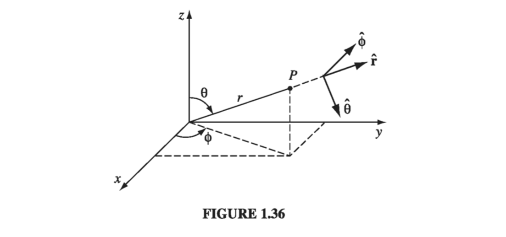
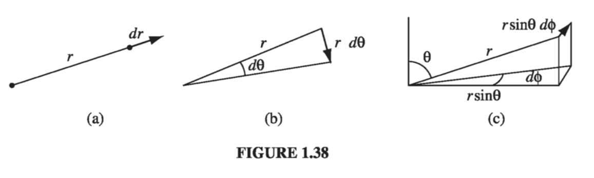
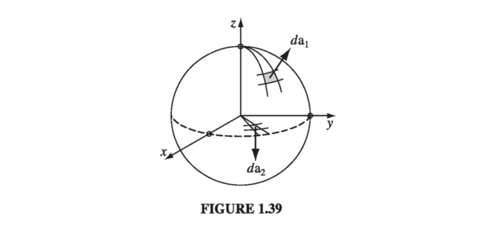
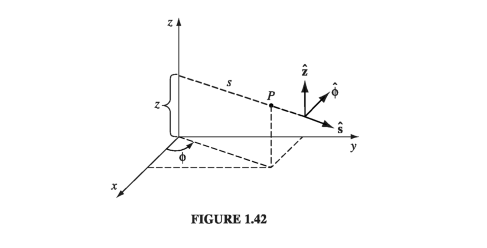

title: Curvilinear Coordinates weight: 40#
1.4: Curvilinear Coordinates#
1.4.1: Spherical Coordinates#
You can label a point P by its Cartesian coordinates (x, y, z), but sometimes it is more convenient to use spherical coordinates \( (r, \theta, \phi) \); \( r \) is the distance from the origin (the magnitude of the position vector r), \( \theta \) (the angle down from the z axis) is called the polar angle, and \( \phi \) (the angle around from the x axis) is the azimuthal angle. Their relation to Cartesian coordinates can be read trigonometrically from Fig 1.36:

Figure 1.36 also shows three unit vectors, \( \hat{r}, \hat{\theta}, \hat{\phi} \), pointing in the direction of increase of the corresponding coordinates. They constitute an orthogonal (mutually perpendicular) basis set (just like \( \hat{x}, \hat{y}, \hat{z} \)), and any vector A can be expressed in terms of them, in the usual way:
\( A_r, A_{\theta}, A_{\phi} \) are the radial, polar, and azimuthal components of A. In terms of the Cartesian unit vectors,
as you can check for yourself (Prob 1.38).
There is a poisonous snake lurking here that I’d better warn you about: \( \hat{r} \) , \( \hat{\theta} \), and \( \hat{\phi} \) are associated with a particular point P, and they change direction as P moves around. For example, \( \hat{r} \) always points radially outward, but “radially outward” can be in the x direction, the y direction, or any other direction, depending on where you are. In Fig. 1.37, \( \vec{A} = \hat{y} \) and \( \vec{B} = - \hat{y} \), and yet both of them would be written as \( \hat{r} \) in spherical coordinates. One could take account of this by explicitly indicating the point of reference: \( \hat{r}(\theta, \phi), \hat{\theta}(\theta, \phi), \hat{\phi}(\theta, \phi) \), but this would be cumbersome, and as long as you are alert to the problem, I don’t think it will cause difficulties. In particular, do not naively combine the spherical components of vectors associated with different points (in Fig. 1.37, \( \vec{A} + \vec{B} = 0 \), not \( 2 \hat{r} \), and \( \vec{A} \cdot \vec{B} = -1 \) , not \( +1 \)). Beware of differentiating a vector that is expressed in spherical coordinates, since the unit vectors themselves are functions of position (\( \partial \hat{r} / \partial \theta = \hat{\theta} \), for example). And do not take \( \hat{r}, \hat{\theta}, \hat{\phi} \) outside an integral, as I did with the Cartesian unit vectors. In general, if you’re uncertain about the validity of an operation, rewrite the problem using Cartesian coordinates, for which this difficulty does not arise.
An infinitesimal displacement in the \( \hat{r} \) direction is simply dr (Fig. 1.38a), just as an infinitesimal element of length in the x direction is dx:

On the other hand, an infinitesimal element of length in the \( \hat{\theta} \) direction (Fig 1.38b) is not just \( \mathrm{d} \theta \) - that doesn’t even have the right units for a length! Rather,
Similarly, an infinitesimal element of length in the \( \hat{\phi} \) direction (Fig 1.38c) is
so that we can write the general infinitesimal displacement as
This plays the role that \( \mathrm{d} x \hat{x} + \mathrm{d} y \hat{y} + \mathrm{d} z \hat{z} \) played in Cartesian coordinates.
The infinitesimal volume element \( \mathrm{d} \tau \) in spherical coordinates, is the product of the three infinitesimal displacements:
I cannot give you a general expression for surface elements \( \mathrm{d} \vec{a} \) , since these depend on the orientation of the surface. You simply have to analyze the geometry for any given case (this goes for Cartesian and curvilinear coordinates alike). If you are integrating over the surface of a sphere, for instance, then \( r \) is constant, whereas \( \theta \) and \( \phi \) change (Fig. 1.39), so
On the other hand, if the surface lies in the xy plane, say, so that \( \theta \) is constant (\( \pi / 2 \)) while \( r \) and \( \phi \) may vary, then
Notice, finally, that \( r \) ranges from \( 0 \) to \( \infty \), \( \phi \) from \( 0 \) to \( 2 \pi \), and \( \theta \) from \( 0 \) to \( \pi \).

Example 1.13#
Find the volume of a sphere of radius R
Well, we know that we should get \( \frac{4}{3} \pi R^3 \). Let’s see what happens…
Great!
So far we have talked only about the geometry of spherical coordinates. Now I would like to “translate” the vector derivatives (gradient, divergence, curl, and Laplacian) into \( r, \theta, \phi \) notation. In principle, this is entirely straightforward: in the case of the gradient,
for instance, we would first use the chain rule to expand the partials
The terms in parentheses could be worked out from (53) - or rather, their inverse. Then we’d do the same for y and z, and then substitute in the formulas for \( \hat{x}, \hat{y}, \hat{z} \) in terms of \( \hat{r}, \hat{\theta}, \hat{\phi} \). It would take an hour to carry out this very brute-force approach, and I suppose this is how it was originally done, but there is a much more efficient indirect approach, which has the extra advantage of treating all coordinate systems at once. I describe the “straightforward” method only to show you that there is nothing subtle or mysterious about transforming to spherical coordinates: you’re expressing the same quantity in different notation, that’s all. The indirect method is relegated to one of the appendices, which I may add later.
Here, then, are the vector derivatives in spherical coordinates:
Gradient:
Divergence:
Curl:
Laplacian:
1.4.2: Cylindrical Coordinates#
The cylindrical coordinates \( (s, \phi, z) \) of a point P are defined in Fig 1.42. Notice that \( \phi \) has the same meaning as in spherical coordinates, and z is the same as Cartesian. \( s \) is the distance to P from the z axis, whereas the spherical coordinate \( r \) is the distance from the origin. The relation to Cartesian coordinates is somewhat cleaner than the spherical sort

The unit vectors (Prob 1.42) are
The infinitesimal displacements are
so
and the volume element is
The range of s is \( 0 \rightarrow \infty \), \( \phi \) goes from \( 0 \rightarrow 2\pi \), and \( z \) from \( -\infty \rightarrow \infty \).
The vector derivatives in cylindrical coordinates are:
Gradient:
Divergence:
Curl:
Laplacian: